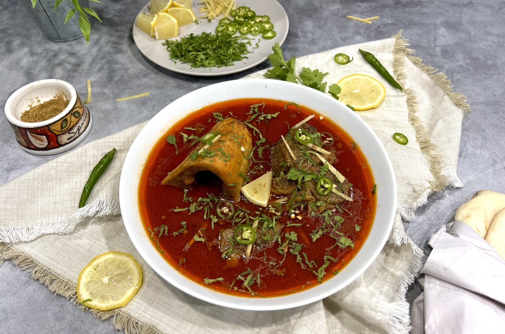

Karachi Beef Nihari

Description
Nihari is a slow cooked meat stew which originated in the Indian subcontinent. It is mainly cooked with beef shank but can be made with mutton or chicken, it is flavored with a blend of spices and thickened with a whole wheat flour slurry. I learnt the base of this recipe from my cousin, however, made a few changes to better suit my style and in my opinion elevate the flavor of the entire dish. You may choose to use less spices or reduce the amount of fat (oil and ghee) if you prefer to fit your needs but remember authentic nihari is loaded with spices and fat. After trying this recipe it will definitely remind you of the famous Pakistani nihari vendor Haji Idrees in Karachi if you've ever had it before.
The homemade nihari masala recipe is my husbands since he was quiet famous amongst his friends in his single days for his nihari. Alhumdulillah to this day he can make nihari better then me. Every time i make nihari Amir makes the fresh home made nihari spice blend for me.
Ingredients - Nihari
- 2 lbs beef shank (nihari meat)
- 1 tbsp ginger garlic paste
- 3/4 cup wheat flour
- 3/4 packet Nihari masala (Shan)
- 1 tbsp homemade nihari masala (recipe follows)
- 2 tbsp paprika
- 5 cups water
- ½ cup ghee
- ¼ cup oil
- salt to taste
- cilantro for garnish (chopped)
- lime/lemon wedges
- green chilis for serving (sliced)
Ingredients - Homemade Nihari Masala
- 3 tbsp dry ginger powder
- 10 cloves pepli
- 6-8 pcs cloves
- 2 tsp cinnamon powder
- 2 tbsp mace
- 1 tsp nutmeg
- 1 tbsp cumin seeds
- 1 tbsp coriander seeds
- 1 pod star anise
- 2 pods black cardamom
- 2 tbsp fennel seeds
Directions
- In a bowl, mix Shan Nihari masala, salt, paprika, and homemade nihari masala with 1/2 cup water to make a paste.
- In another bowl, mix 3/4 cup wheat flour with 1 cup of water to make a smooth paste.
- In a heavy-bottom stock pot, heat oil and ghee.
- Add the masala paste to the pot and cook for 1 minute.
- Add the beef and sear the meat for a few minutes on each side.
- Add the ginger garlic paste and fry for another few minutes on a medium-low flame.
- Add 5 cups of water and bring it to a boil.
- When the water is boiling, add the wheat flour paste, stirring continuously to avoid lumps. You will notice that the oil will disappear.
- Turn down the flame to medium-low, cover the pot, and continue slow cooking the nihari for 8 hours.
- If there are any bones with marrow, you can take out the marrow from the bones after 3 hours.
- Check the nihari every couple of hours and stir the meat around.
- After a few hours, the oil will slowly start to separate from the gravy and you’ll be able to notice it on the surface.
- After around 7 to 8 hours, the meat should be fully cooked and fork-tender. Turn off the flame.
- To serve, sprinkle with cilantro, thinly julienned ginger, sliced green chili, and lime/lemon wedges.
- Enjoy with hot naan!